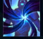

Kayn

| Kayn The Shadow Reaper | |
|---|---|
| Release date | 12.07.2017 |
| Class | Skirmisher |
| Positions | Jungle |
| Resource | Mana |
| Range type | Melee |
| Adaptive type | Physical |
| Base statistics | |||
| Health | 585 – 2030 | Mana | 410 – 1260 |
| Health regen. | 8 – 20.75 |
Mana regen. | 11.5 – 27.65 |
| Armor | 38 – 94.1 | Attack damage | 68 – 124.1 |
| Magic resist. | 32 – 53.25 | Crit. damage | 175% |
| Move. speed | 340 | Attack range | 175 |
Un practicant fără pereche al letalei magii a umbrelor, Shieda Kayn luptă pentru a-și împlini adevăratul destin: acela de a conduce Ordinul Umbrei către o nouă eră a supremației ioniene. Mânuiește arma darkin pe nume Rhaast, nelăsându-se abătut din drum de influența acesteia asupra minții și trupului său. Pentru Kayn, există doar două deznodăminte posibile: fie reușește să supună coasa și s-o facă să-i urmeze voința... fie aceasta va ajunge să-l macine pe dinăuntru, eliberând forțe care vor distruge Runeterra. | COASA DARKIN Kayn mânuiește o armă străveche și se luptă mereu cu Rhaast, darkinul dinăuntrul său, pentru a menține controlul. Fie darkinul va triumfa, fie Kayn îl va stăpâni pe Rhaast și va deveni asasinul din umbră. Darkin: te vindeci cu o parte din daunele pe care le provoci campionilor inamici prin abilități. Asasinul din umbră: provoci daune bonus de-a lungul primelor secunde petrecute în lupta împotriva campionilor inamici. |
|||
|---|---|---|---|---|
LOVITURA COASEI Kayn se năpustește înainte, apoi atacă. Ambele acțiuni provoacă daune. |
||||
TĂIȘ NEÎMBLÂNZIT Kayn provoacă daune în linie dreaptă și încetinește toți inamicii loviți. |
||||
| PASUL UMBRELOR Kayn poate merge prin ziduri. |
||||
 |
INVAZIA UMBRELOR Kayn se ascunde în trupul unui inamic; când iese din el, îi provoacă daune masive. |